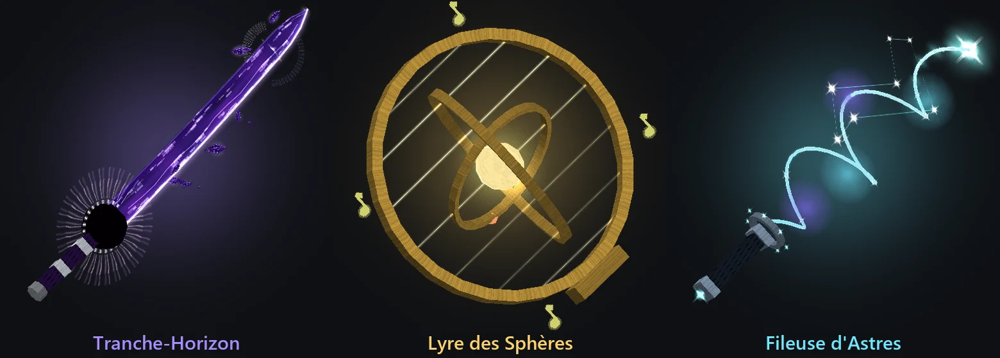
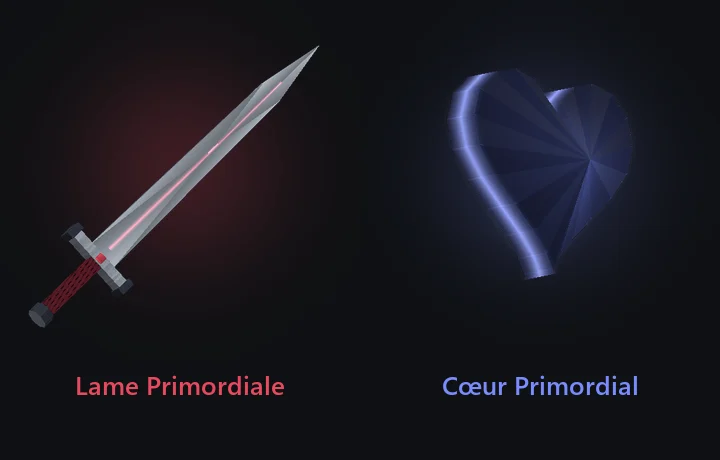
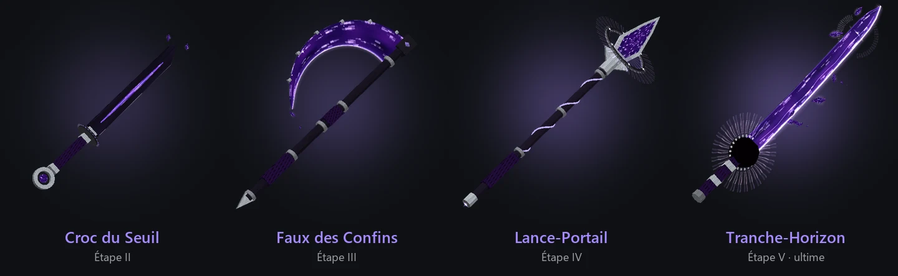
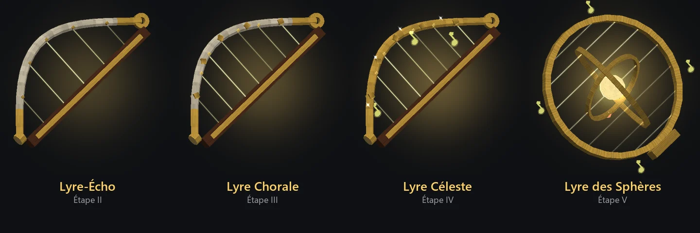
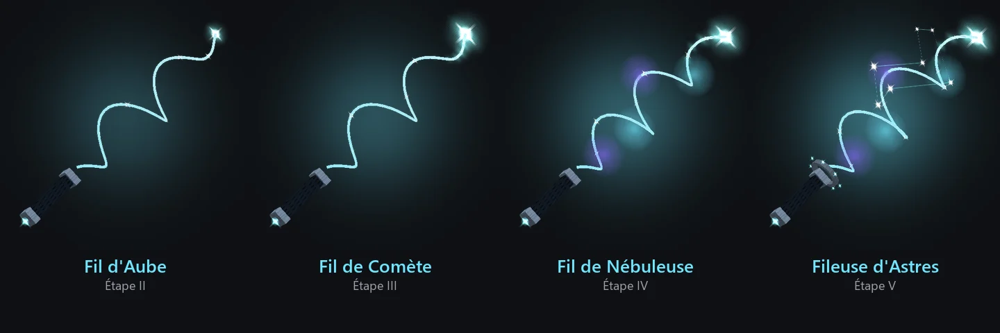

L'Ascension
L'Arbre de l'Arme
Dans l'Arbre de l'Arme, chaque objet est une arme à part entière : sa forme, son don (un passif) et son geste (une compétence) n'appartiennent qu'à elle. Une arme n'est jamais un morceau de l'ultime : c'est une marche, chaque arme un cran en dessous de la suivante. Les gestes se rechargent sur l'arme elle-même, comme un objet en attente dans la barre rapide, et une petite jauge sous le viseur suit le don de l'arme en main (veines, crescendo, encoches, métronome…).


(agrandir l'image)La Lame Primordiale
Le tronc, commun aux trois voies : une large lame de cristal pâle dont le fil est parcouru de trois veines tressées, le vide de la Faille, l'or de la Lyre, la lumière stellaire du Fil, qui se rejoignent à la pointe ; une garde à trois branches, une pierre de chaque voie, un cristal rouge pour pommeau.


(agrandir l'image)| Don | Geste |
|---|---|
| Triade : chaque coup chargé allume une veine ; la troisième libère l'Écho Primordial, une salve des trois lumières qui blesse et repousse tout autour | Utiliser : Taille d'Éveil, un croissant de lumière rouge file droit devant et traverse trois ennemis (3 s) |
La Faille
Les armes du vide : une dague, une faux, une lance, puis le katana de l'horizon.


(agrandir l'image)| Arme | Don | Geste |
|---|---|---|
| Croc du Seuil tantō d'obsidienne fendu de vide, un anneau pour pommeau | Rongement : chaque coup laisse une marque de vide qui ronge l'ennemi chaque seconde, jusqu'à trois marques | Utiliser : Permutation, vous échangez votre place avec l'ennemi visé, sonné et rongé ; tourné vers son dos, votre coup suivant frappe 50 % plus fort (6 s) |
| Faux des Confins un croissant de vide au bout d'une longue hampe noire | Moisson : chaque coup chargé fauche tout l'arc devant vous ; chaque ennemi tué par la faux vous rend un cœur | Utiliser : Croissant Errant, la lame de vide lancée en tournoyant, aller et retour, tranche tout sur son passage (5 s) |
| Lance-Portail une feuille de vide qui passe à travers un anneau tournant | Repli : au troisième coup chargé sur le même ennemi, un portail s'ouvre derrière lui et la lance le frappe de l'autre côté | Maintenir puis relâcher : Javelot du Seuil ; là où il tombe s'ouvre un portail. Utiliser dans les 5 s pour le franchir et retomber dans une explosion de vide qui soulève les ennemis (10 s) |
| Tranche-Horizon l'ultime | Lisière, Fêlure, Abîme : chaque coup laisse une faille suspendue, la troisième fêlure fait éclater l'ennemi, chaque mort ouvre un puits de néant | Bref : Pas de Faille (4 s). Maintenir ½ s : Volée d'Éclats (2 s) ; 1 s : Puits du Néant (12 s) ; 1,5 s : Coupe de l'Horizon, sur trente blocs tout s'arrête puis se fend (20 s). Accroupi, maintenir 3 s : Brèche de l'Astrelume (5 min) |
La Brèche de l'Astrelume déchire l'espace-temps : une faille géante, haute comme deux hommes, s'ouvre debout devant vous, ses bords crépitent, les étoiles de l'autre côté tournent dedans, l'air y est aspiré et la foudre tombe de part et d'autre. Vous êtes happé, l'écran plonge dans un tunnel d'étoiles, et vous ressortez dans l'Astrelume par une brèche qui se referme derrière vous. Depuis l'Astrelume, la même brèche vous ramène chez vous.
La Lyre
Des instruments devenus armes : une rapière qui est un archet, une masse qui est une cloche, un glaive qui est un diapason, puis la harpe-arc des sphères qui tire des notes.


(agrandir l'image)| Arme | Don | Geste |
|---|---|---|
| Archet de Cristal une rapière de cristal, le crin d'or d'un violon tendu le long de sa lame | Crescendo : coup après coup la musique monte, do, ré, mi, fa, chacun 8 % plus fort ; le cinquième, fortissimo, éclate en anneau de son | Utiliser : Pizzicato, une garde d'un instant ; un coup ou un tir pris dedans est paré, l'agresseur frappé en retour, le crescendo à son comble (2,5 s, presque rien après une parade réussie) |
| Carillon de Guerre une masse dont la tête est une cloche de bronze, son battant qui oscille | Glas : chaque coup chargé fait sonner la cloche ; tout ce qui entoure l'ennemi est blessé et ralenti | Maintenir 1 s puis relâcher : Bourdon, la cloche frappe le sol et trois anneaux de son roulent en projetant tout (8 s) |
| Diapason Astral un glaive bleu nuit étoilé d'or, un soleil à la racine d'une fourche qui vibre | Métronome : le diapason bat la mesure (deux traits se rejoignent sous le viseur) ; un coup sur le temps frappe 50 % plus fort, avec un petit bang sonique | Maintenir puis relâcher : Note Tenue, un rayon de son pur sur 24 blocs qui traverse tout, plus fort s'il a été tenu longtemps (9 s) |
| Lyre des Sphères l'ultime | Phrase, Chœur, Orbite : trois notes par tir, quatre de suite frappent un accord, chaque note se divise et transperce | Maintenue 3 s : la Symphonie, seize notes tombent du ciel sur l'Hymne à la joie (30 s). Accroupi, tendue à fond : Chœur des Sphères, un mur de son, un cercle qui soigne et deux astres chantants (24 s) |
Le Fil
Les outils des trois Moires, qui filent, mesurent et coupent le fil de chaque vie, puis la fileuse qui tisse les étoiles.


(agrandir l'image)| Arme | Don | Geste |
|---|---|---|
| Fuseau de Clotho un fuseau de bois pâle gonflé d'un cocon de fil d'étoiles | Fil de Vie : chaque coup chargé tisse un fil qui vous rend de la vie ; au troisième, l'ennemi est pris dans un cocon et ne bouge plus | Utiliser : Fil d'Ariane, un fuseau posé là où vous êtes ; utiliser à nouveau dans les 20 s pour y être ramené, soigné (15 s) |
| Aune de Lachésis une longue règle graduée d'or, une sphère céleste pour tête, un fil à plomb qui pend | Mesure : chaque coup chargé grave une encoche, +6 % de dégâts chacune ; la cinquième mesure l'ennemi, immobilisé, qui subit 40 % de plus de vos coups | Utiliser : Métier à Tisser, un mur de lumière tissée devant vous pendant 6 s, qui arrête les tirs et blesse ce qui le traverse (14 s) |
| Ciseaux d'Atropos une lame de nuit et une lame d'or qui s'ouvrent et se ferment sur un fil coupé | Fil Tranché : un coup chargé sur un ennemi presque mort, sous 18 % de sa vie, tranche son fil et il tombe sur-le-champ ; les boss saignent 50 % de plus | Utiliser : Coupe du Destin, des ciseaux géants se referment devant vous, blessent, ôtent tous les effets bénéfiques et tranchent les plus faibles (12 s) |
| Fileuse d'Astres l'ultime | Constellation, Comète, Nébuleuse : chaque ennemi frappé devient une étoile liée aux autres (ce qui blesse l'une blesse toutes), frappé de loin il reçoit une comète, ce qu'il frappe est ralenti et brille | Avec trois étoiles ou plus, la constellation explose en novas (15 s) ; sinon la Tension ; sans étoile, le Grappin. Accroupi : le Nuage d'Étoiles |